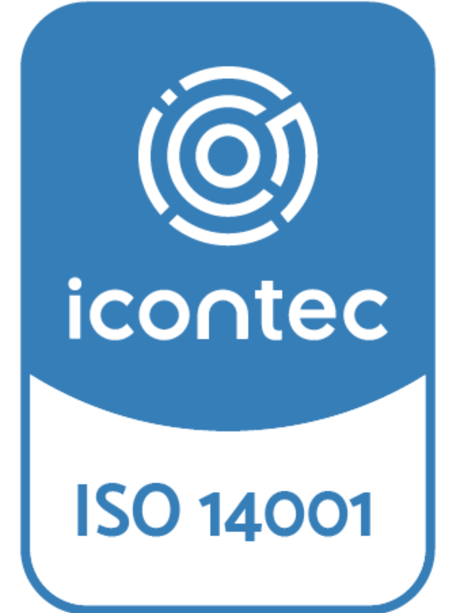
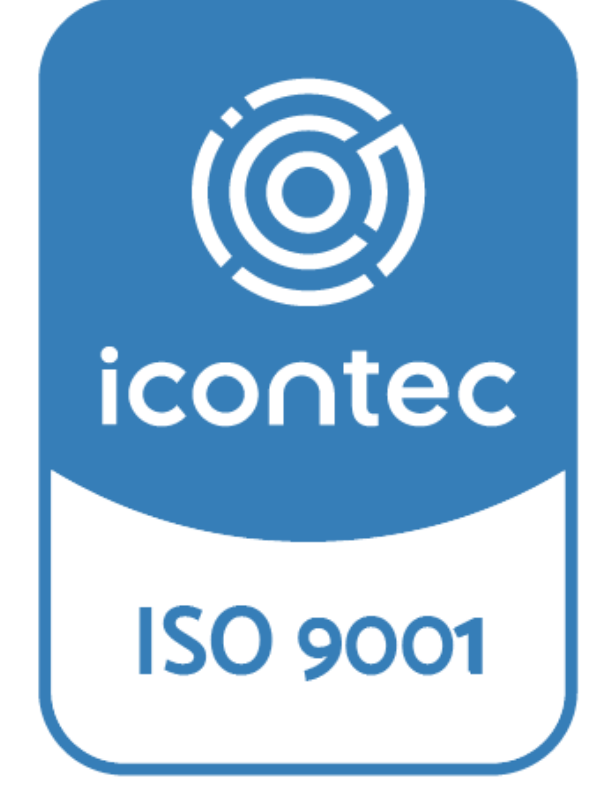
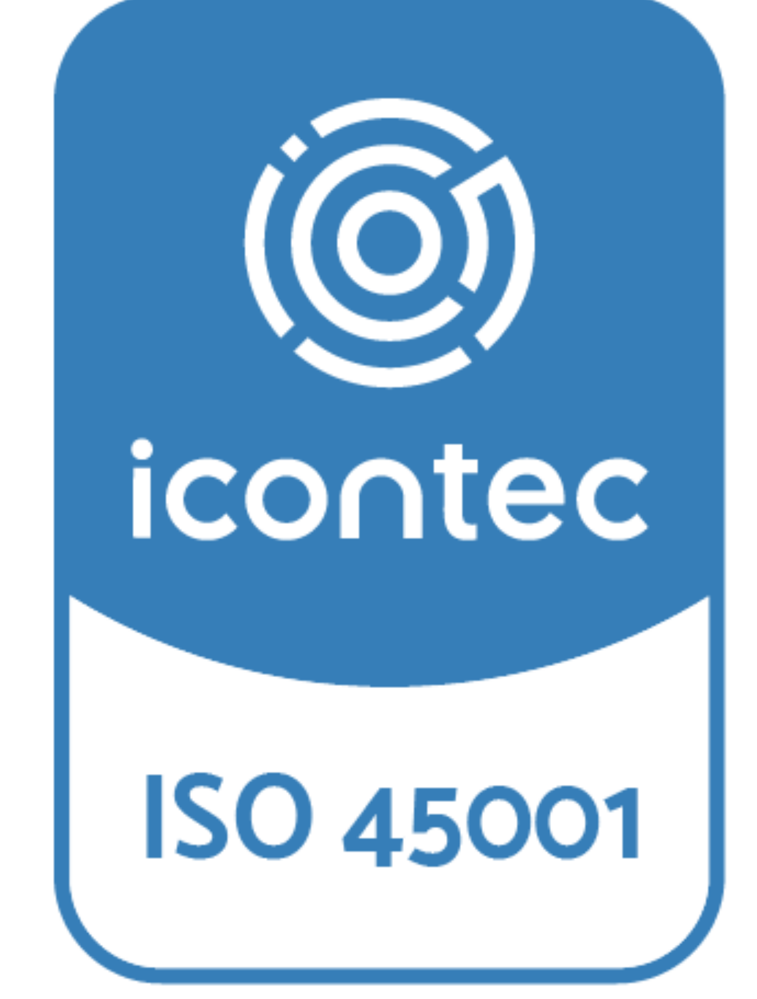
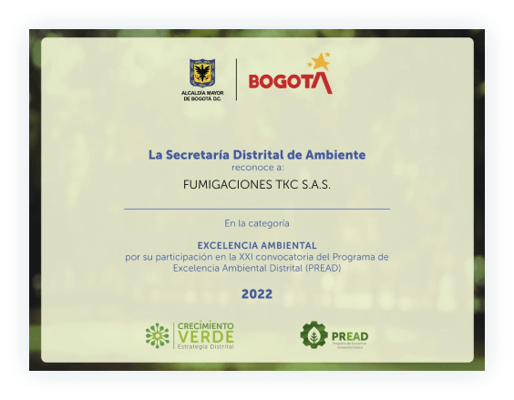
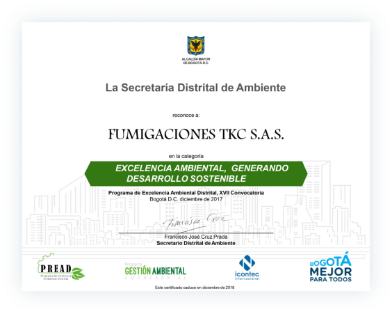
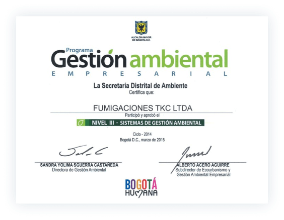
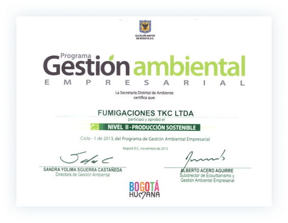
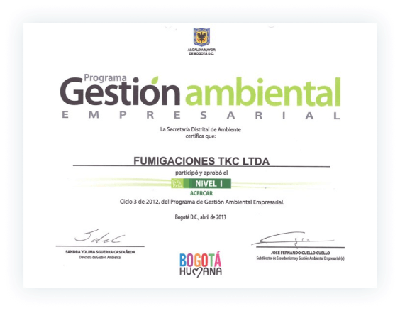
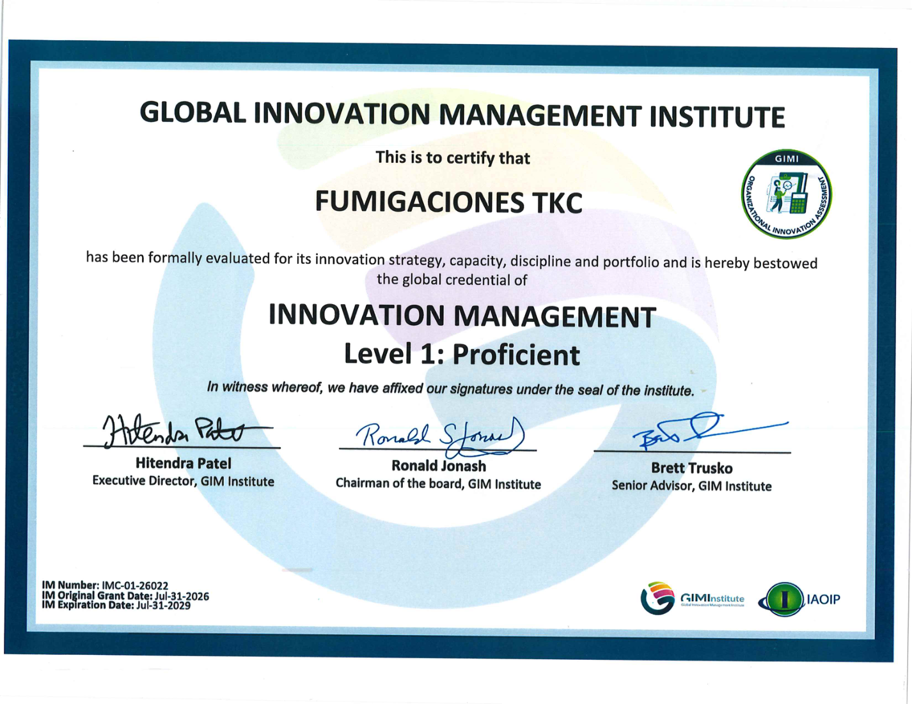

Política HSEQ
Texto provisional de diseño. Aquí se publicará la política del Sistema de Gestión Integral una vez aprobada por la organización.
Conozca los compromisos de gestión, los registros y los reconocimientos que respaldan nuestra trayectoria.
Espacio preparado para divulgar los documentos aprobados por TKC.
Texto provisional de diseño. Aquí se publicará la política del Sistema de Gestión Integral una vez aprobada por la organización.
Texto provisional de diseño. Aquí se incorporará la política de tratamiento de datos personales con su versión y fecha de vigencia.
Texto provisional de diseño. Aquí se incluirá el documento del Plan Estratégico de Seguridad Vial cuando sea validado.
Estas tarjetas son una demostración de diseño; no representan políticas vigentes ni aprobadas.
Registros del sistema de gestión compartidos por TKC. Confirmar vigencia y alcance con el área de Calidad.

Sistema de Gestión Ambiental
Registro: SA-CER295440
Sistema de Gestión de Calidad
Registro: SC6772-1
Sistema de Gestión de Seguridad y Salud en el Trabajo
Registro: ST-2000526Histórico de participación y reconocimientos de gestión ambiental, presentado por año.

2022

2018

2014–2015

2013

2012–2013

Certificado emitido a Fumigaciones TKC por Global Innovation Management Institute. Documento facilitado para exhibición y verificación.